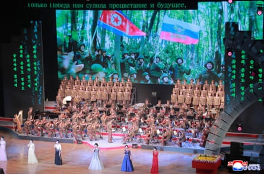

Kim Jong-un has paid tribute to North Korean soldiers killed during Russia’s war with Ukraine , resting his hands on their repatriated coffins in a rare public acknowledgment that his armed forces have suffered fatalities in the conflict.
Photographs of the North Korean leader pausing in front of a line of half a dozen coffins draped in the country’s flag were displayed on a screen at a gala performance held on Sunday to mark the first anniversary of a military treaty between the North and Russia .
The event at East Pyongyang Grand Theatre combined performances by North Korean and visiting Russian artists with images celebrating a mutual defence pact agreed by Kim and the Russian president, Vladimir Putin , in Pyongyang in June last year.
The scenes showing Kim and the remains of fallen soldiers followed those of troops from both countries waving their national flags. One image purportedly showed pages from a blood-stained notebook, believed to have belonged to a North Korean soldier, that had been retrieved from a battlefield in Russia’s Kursk region.
A performance by North Korean artists attended by Russian culture minister Olga Lyubimova, North Korean leader Kim Jong-un and his daughter Kim Ju-ae in Pyongyang on Sunday.Photograph: KCNA/EPA
According to South Korea ’s Yonhap news agency, the messages in the notebook read: “The decisive moment has finally come,” and “Let us bravely fight this sacred battle with the boundless love and trust bestowed upon us by our beloved Supreme Commander” – a reference to Kim.
It was not immediately clear when the repatriation ceremony took place. Kim and other officials, including his influential sister, Kim Yo-jong , and the foreign minister, Choe Son-hui, are wearing winter clothing, suggesting that the soldiers’ remains may have been returned to the North several months ago.
Having denied for months that North Korean soldiers had been sent to fight alongside Russian forces, the regime is now attempting to put a positive spin on its involvement in the Ukraine conflict .
“ North Korea probably wanted to frame the fallen soldiers not just as sacrifices but as part of a victory narrative,” Hong Min, a senior researcher at the Korea Institute for National Unification, told Yonhap.
“The footage appears to have been released after the two countries acknowledged the troop deployment” and declared their joint operation to reclaim the Kursk region in western Russia a success, Hong added.
Footage of the gala broadcast by North Korea’s state KRT television showed Kim, who appeared emotional at times, sitting alongside his guest, the Russian culture minister, Olga Lyubimova, and his daughter, Kim Ju-ae . People in the audience were shown wiping away tears.
The Korea Herald said the event was the first time state media had shown footage and photos of soldiers sent to Russia that can be seen by North Korean citizens.
The state-run KCNA news agency said the event had inspired confidence in the “ties of friendship and the genuine internationalist obligation between the peoples and armies of the two countries that were forged at the cost of blood”.
In April, Putin and Kim confirmed for the first time that North Korean troops had been deployed, with both leaders describing them as “heroes”.
Kim said at the time that a monument would be built in Pyongyang to honour his soldiers, and that flowers would be laid before the tombstones of those who had died – seen as the first public confirmation by the regime that its troops had been killed in combat.
The North has sent an estimated 15,000 troops to fight in the war since last autumn. It has suffered about 4,700 casualties, including 600 deaths, South Korean lawmakers said in April, while Seoul’s intelligence agency recently claimed that additional deployments could come in July or August.
North Korea has also provided Russia with large quantities of ammunition , artillery shells, ballistic missiles and other weapons, reportedly in return for weapons and satellite technology, and economic and other assistance from the Kremlin.